|
I was determined to complete the Phase I flight test period in time to make the trip to AirVenture in 2013, and wrapped
it up on July 14th, after logging 43.8 hours on the plane. One week later I took my wife for a flight to Friday Harbor
in the picturesque San Juan Islands -- a twenty-minute flight north of our home, but a five-hour trip by car and ferry.
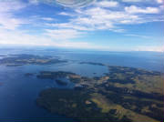
|
| San Juan Islands and Friday Harbor Airport |
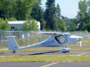
|
| Parked at Friday Harbor Airport |
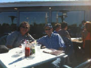
|
| Lunch on the harbor waterfront |
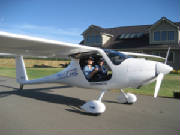
|
| Loaded and ready to depart |
On July 27th my daughter and I packed the plane with camping gear, clothing, tools, etc. and departed for Oshkosh.
The weather en route and at Oshkosh for the week was the best in years. It was severe clear all the way from Port
Angeles,WA to the Wisconsin border, where we had to duck under a narrow band of showers. It got pretty bumpy over the
mountains and central plains, so I climbed to 12,500 ft at to get above the thermals until the building clouds began to
form a solid deck and forced us back down into the bumps. I carried a Stratus ADS-B receiver for in-cockpit weather
radar display using the ForeFlight app on my iPad, which was a great aid in showing that the band of showers in Wisconsin
was quite narrow, with clear skies beyond that band to the east.
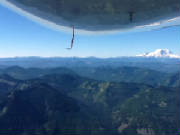
|
| Over Cascade Mountains with Mt Rainier in the background |
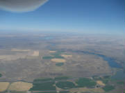
|
| Central Washington irrigated farmland |
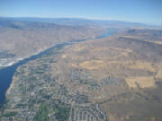
|
| Crossing Columbia River |
The route was Sequim WA, Coeur d'Alene ID, Great Falls MT, Sheridan WY, Pierre SD, Mankato MN, Wisconsin Rapids WI,
Oshkosh. The Sinus was a delight, handling two adults, all the baggage and full fuel with no problem getting off the ground
and climbing well, even at runway density altitudes as high as 8,000 ft. The Skyview displays and autopilot made the
flying very straightforward and comfortable. The only real issue outbound was the alternator dropping out at one point,
but when I reduced the load by unplugging the iPad and Stratus receiver, it came up OK. It was worrisome, however,
since the total electrical load was only about ten amps max, which the Rotax alternator and regulator should handle
easily.
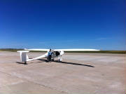
|
| Great Falls, Montana -- Flat and hot! |
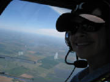
|
| Over Great Plains farmland |
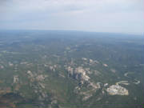
|
| Black Hills, South Dakota |
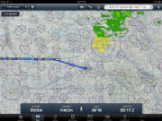
|
| Stratus weather display on iPad - Minnesota |
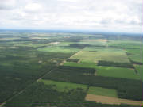
|
| Wisconsin - getting close! |
We stopped overnight at Sheridan WY and Wisconsin Rapids. We could have flown in to Oshkosh on the second day,
but I had never flown into the Oshkosh arrival before, and I wanted to be well prepared. I planned the stop at Wisconsin
Rapids so that we could get an early start for the short flight into AirVenture after a thorough final review of the arrival
NOTAM, and avoiding a likely crush of arrivals later in the day. Unfortunately, we had a flat tire on the runway at
Wisconsin Rapids, so we had to deal with that challenge first.
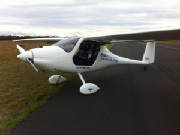
|
| Stuck on the runway at Wisconsin Rapids |
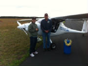
|
| Airport manager to the rescue |
Sitting in the middle of the runway with a flat tire at 6:00 PM on a Saturday evening at an airport that appeared
to be deserted had me quite worried about what I was going to do. Fortunately, the airport manager was just leaving
for the day, saw our predicament and came out to help. He brought an air bottle and after inflation the tire it
held enough pressure to get the Sinus into a parking spot. Then he gave us the airport loaner truck to get to our
motel for the evening -- airplane people are great!
In the morning I stopped at Walmart, bought a tube patch kit, a fix-a-flat kit and found a garden tractor inner tube
that was very close to the right size. I decided to try the fix-a-fat first, since repairing or replacing the inner
tube was going to take awhile. After squirting it into the filler valve, the tire was still holding pressure twenty
minutes later, so we launched for Oshkosh. Our careful study of the NOTAM and the experienced
Oshkosh controllers made the arrival straightforward, until we touched down on Runway 27 and the tire went flat again on
rollout. We drifted just clear of the left side of the runway, but then we were stuck. The Oshkosh volunteers
came running out excitedly, wondering why I wasn't clearing the runway area, because there was a large contingent of warbirds
about to arrive. With their help, we lifted the wing to get the wheel off the ground and walked the plane clear of
the runway. Once clear, they called for help while we enjoyed a close-up view of the warbird arrivals. Before
long a mechanic arrived, we got the wheel off, installed the Walmart tube, put everything back together and taxied to
our parking spot with some great stories to tell.
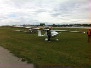
|
| Flat tire at Oshkosh, waiting for help |
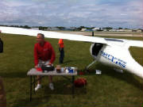
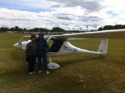
|
| Parked and ready for a great week |
During the week I tried several vendors to see if they had a replacement tube, or could order one in, but was unsuccessful
in finding a tube before we departed. I even found a ride to the local Walmart to see if I could at least get another
one of the garden tractor tubes, but they did not have anything close. So finding that tube at Walmart in Wisconsin
Rapids was fortuitous indeed. My family joined us at Oshkosh to celebrate my decades-old dream
of flying my own airplane there, and we had a great week.
My son made the return trip with me, departing Saturday morning. Soon after takeoff, the alternator dropped
out and stayed out. I decided to land in Anoka MN to see if we could get some help locating and fixing the problem.
There wasn't a mechanic available there on a Saturday, but after making a phone call back to a Rotax expert near my home
airport, I concluded that the likely problem was a failed voltage regulator. Since the Rotax uses a Ducati voltage
regulator, we thought perhaps a Ducati motorcycle dealer would have one in stock. Anoka is a suburb of Minneapolis,
so we located a Ducati dealer and used the FBO loaner car to drive there. After looking at what they had on hand for
voltage regulators and a discussion with their parts salesman, I learned that the Ducati that builds motorcycles and the
Ducati that makes the voltage regulator are not the same company. They had a couple of regulators in stock, but
it was clear that they were not going to be a drop-in replacement. So, I decided to see if the alternator would stay
on line at a reduced load. We climbed into the plane, turned everything off except for one Skyview display, radio
and transponder. The alternator stayed on line, so we theorized that the regulator was overheating. We also
noted that the regulator is tucked up under the instrument panel cover with little air circulation, so my son used a piece
of cardboard to make a scoop and divert some outside air under the panel and cool things off a bit. We made the
rest of the flight back home that way, hand flying the plane with the iPad and Stratus operating on their internal batteries.
The half-day spent in Anoka wrestling with the alternator/regulator problem made it tight
to get home by Sunday evening, but by skipping a planned fuel stop we made it OK. The weather was good all the way
back. There was a low cloud deck over Montana that had us at about 600 ft AGL for 150 miles or so, but the terrain
was flat with great visibility underneath, so we zipped along looking at ranches, cattle, horses and pickup trucks.
The road visible in the photo on the left below is a dirt road that ran due east-west for at least a hundred miles, bordering
ranches the whole way, but notably lacking towns of any size. It left me wondering how they deal with having to travel
very long distances to buy groceries, seek medical care, and everything else we take for granted, and what it must be like
to travel that road during the winter months. The populace must be a very hardy, independent breed!
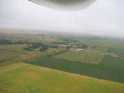
|
| Low clouds over Montana |
The Miles City, Montana airports sits on a plateau that was higher than our altitude beneath the low cloud deck.
Fortunately, as we approached Miles City, the cloud bottoms lifted enough for us to climb up to pattern altitude and
land.
There was some thunderstorm development over the Cascade Mountains as we arrived, but it was easy to avoid with a
slight deviation to the south. Altogether, it was a great adventure that made many very pleasant memories.
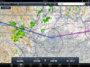
|
| We diverted south around this weather |
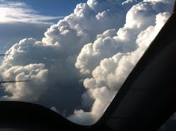
|
| Bypassing heavy weather |
Trip totals: Distance about 3,050 nm, 34.5 hrs Hobbs time, 31.2 hrs air time, 100 gal fuel. Fuel
consumption was 2.9 gal/hr (Hobbs time) or 3.2 gal/hr (air time). P.S. As I was pulling the
plane into the hangar after arriving at home, the Walmart tube failed and the tire went flat! So I was very lucky not
to have been stranded somewhere with no easy fix. I later concluded, after two more flat tire incidents, that the tire
was slipping on the rim and putting stress on the valve stem, so I needed to be carrying 25 to 28 psi of tire pressure to
prevent the slippage. That seems to have solved the flat tire problem, although I now carry a spare inner tube with
me in the plane.
|